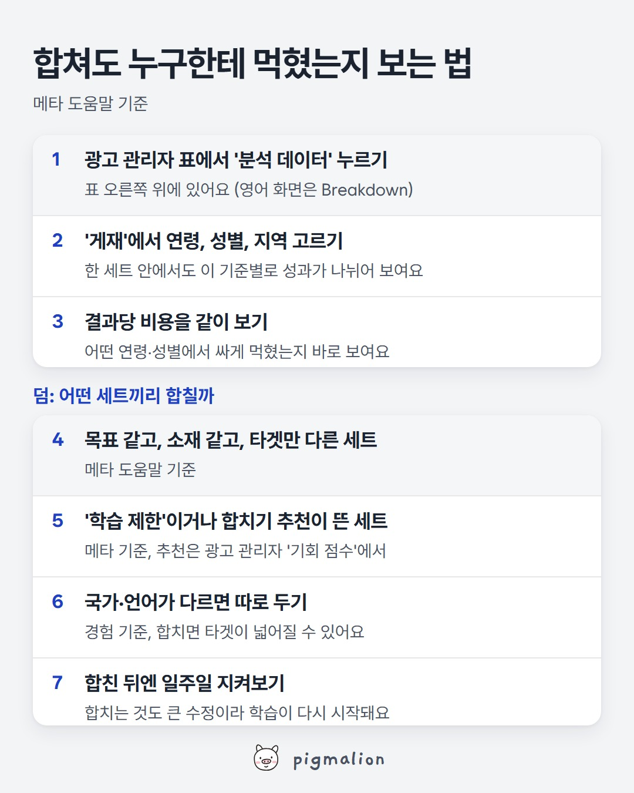

합쳐도 누구한테 먹혔는지 보는 법
저장해두고 성과가 떨어질 때 위에서부터 확인하세요

이미지를 길게 누르면 저장돼요
메타 공식 도움말로 보는 자세한 내용
'학습 제한'이 뭔가요
광고 세트가 마지막 중요한 수정 후 일주일 동안 최적화 이벤트를 약 50개 얻기 어려울 것 같으면 광고 관리자의 게재 열에 '학습 제한'이 떠요. 메타는 이게 벌칙이 아니라 지금 설정으로는 예산이 효율적으로 쓰이지 않는다는 신호라고 설명해요.
왜 쪼개면 손해인가요
광고 세트를 동시에 많이 돌리면 세트마다 배울 기회가 줄어서 결과가 적게 나와요. 그래서 학습 단계에 더 오래 머물고, 최적화가 되기 전에 예산을 더 쓰게 될 수 있어요. 메타 도움말 예시로는 '강아지 관심', '강아지 장난감 관심', '강아지 목줄 관심'을 세 세트로 나누는 것보다 세 관심사를 한 세트에 넣는 쪽이 성과가 나을 수 있다고 해요.
합치면 어떤 타겟이 잘 됐는지 못 보나요
볼 수 있어요. 메타는 보고용으로 타겟을 쪼개는 대신 보고서의 세부 항목 나누기(breakdowns)로 연령, 성별, 국가, 지역 등을 나눠 보라고 권해요.
어떤 세트끼리 합치나요
메타가 든 기준은 캠페인 목표가 같고 소재도 같은데 타겟만 다른 세트예요. 메타는 세트끼리 타겟이 쪼개진 걸 감지하면 광고 관리자의 기회 점수에 합치기 추천을 띄우고, 자동 규칙을 걸어 두면 자동으로 합치게 할 수도 있어요. 자동으로 합칠 때는 결과당 비용이 가장 좋은 세트를 남기고 나머지 세트의 타겟과 예산을 옮긴 뒤, 중복된 소재는 지워요.
합치면 타겟이 넓어질 수 있어요
메타는 한 세트에 타겟 조합을 여러 개 넣지 못해요. 그래서 '미국 남성'과 '캐나다 여성'을 합치면 '미국과 캐나다의 남성과 여성'이 돼요. 국가, 언어, 성별처럼 조합이 갈리는 세트는 합치기 전에 이 점을 확인하세요.
합치는 것도 수정이에요
타겟을 바꾸거나 새 광고를 넣는 건 학습을 다시 시작시키는 중요한 수정이에요. 그래서 한 번에 정리해서 합치고, 합친 뒤에는 일주일 정도 지켜보는 게 좋아요.
출처: 메타 비즈니스 도움말 '학습 제한 정보', '광고 세트와 캠페인 합치기로 타겟 쪼개짐 줄이기', '자동 규칙으로 광고 세트를 합치는 방법'
AI 프롬프트
■ 어디에: 챗GPT, 클로드, 제미나이 중 아무거나 (무료 버전도 돼요)
■ 무엇을: 지금 켜져 있는 광고 세트 목록 (이름, 타겟, 하루 예산, 최근 7일 결과 수, 게재 상태)
■ 어떻게:
- 아래 프롬프트를 "복사" 버튼으로 복사해 AI 새 대화에 붙여넣기
- 맨 끝 [ ] 칸에 광고 세트 목록을 붙여넣기 (광고 관리자 표를 그대로 복사해도 돼요)
- 엔터. 합치면 좋은 세트 묶음과 합친 뒤 나눠 볼 기준이 나와요
너는 메타 광고를 운영하는 퍼포먼스 마케터야. 아래 광고 세트들이 너무 잘게 쪼개져서 학습을 못 끝내고 있는지 점검해줘. 기준 (메타 도움말 '학습 제한 정보', '타겟 쪼개짐 줄이기'): - 마지막 중요한 수정 후 일주일 동안 최적화 이벤트가 약 50개 나오기 어려우면 '학습 제한' - 학습 제한의 흔한 원인: 작은 타겟, 적은 예산, 낮은 입찰·비용 목표, 다른 세트와 타겟 겹침, 드물게 일어나는 최적화 이벤트, 너무 많은 광고를 동시에 운영 - 해결: 비슷한 세트와 캠페인 합치기, 타겟 넓히기, 예산 올리기, 입찰·비용 목표 올리기, 더 자주 일어나는 최적화 이벤트 고르기 답은 이렇게 정리해줘: - 세트마다 최근 7일 결과 수로 '학습 제한 위험 / 괜찮음' 판정과 이유 한 줄 - 합치면 좋은 세트 묶음 (목표·소재가 같고 타겟만 다른 것끼리), 합친 뒤 예상 일주일 결과 수 - 합칠 세트 고르는 기준: 메타 기준은 '캠페인 목표가 같고 소재도 같은데 타겟만 다른 세트'. 국가나 언어가 다른 세트는 합치면 타겟 조합이 넓어지니 따로 두기 (경험 기준이라고 표시) - 합친 뒤에도 '누구한테 잘 먹혔는지'는 광고 관리자 '분석 데이터' → '게재'(연령, 성별, 지역)로 어떻게 보면 되는지 - 합치는 것 자체가 큰 수정이라 학습이 다시 시작된다는 점을 고려한 진행 순서 [광고 세트 목록: 이름 / 타겟 / 하루 예산 / 최근 7일 결과 수 / 게재 상태]